Unity editor tool · Unity 6 · URP 17
Built-in shaders, working in URP.
URP Migrator converts surface shaders, lit vertex/fragment shaders, GrabPass and OnRenderImage image effects from
the Built-in Render Pipeline to URP. It keeps your materials and backs up every file.
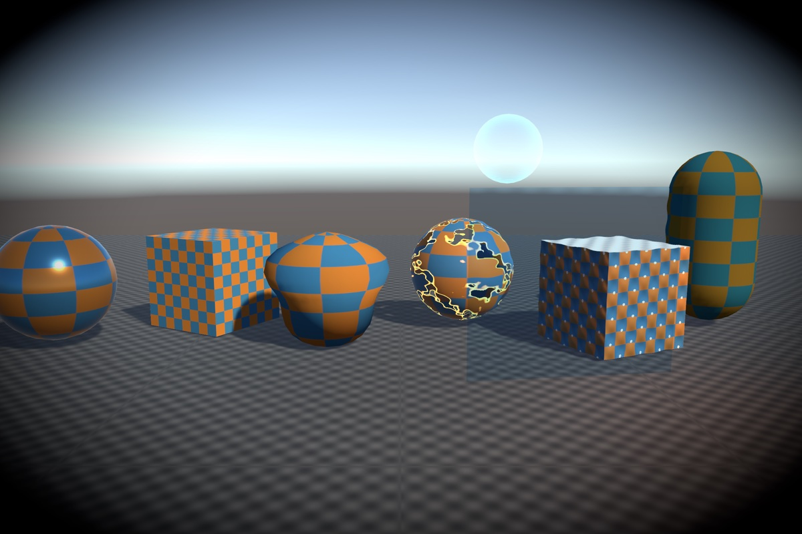
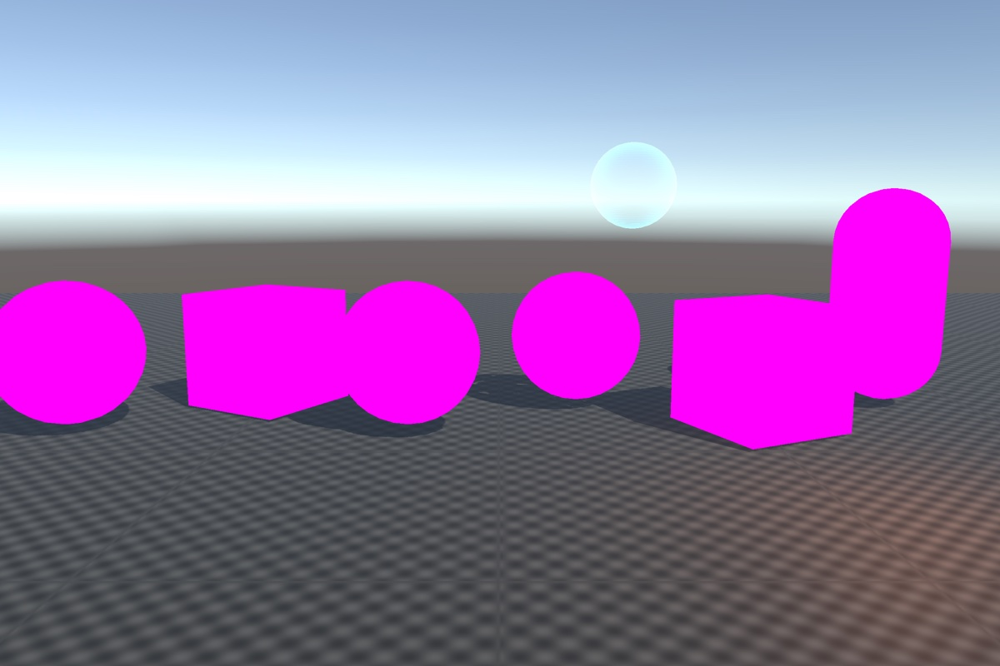
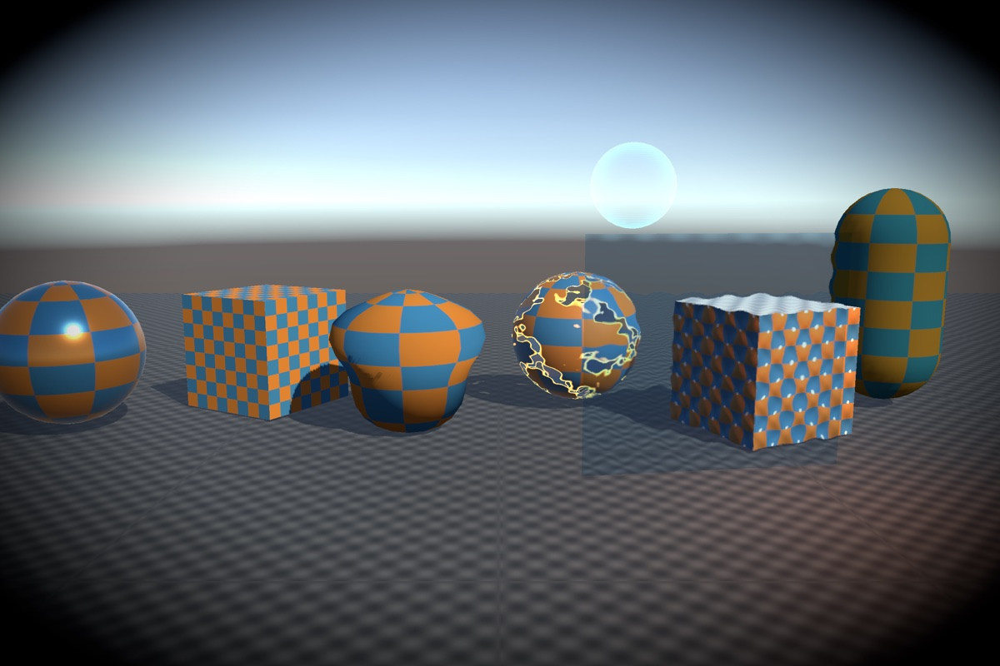
Why
Unity is retiring the Built-in Render Pipeline: deprecated in Unity 6.5, supported in 6.7 LTS until the end of 2028, and gone in Unity 7. Unity's Render Pipeline Converter upgrades Unity's own materials. Surface shaders, custom lit shaders, GrabPass and image effects have to be rewritten by hand, and URP Migrator does that rewrite.
Measured, not promised
OnRenderImage effects match Built-in (0.32–0.68/255)Measured on a 52-file corpus of Built-in shaders and effects written for the purpose (36 surface shaders, 11 vertex/fragment shaders, 5 image effects), rendered in both pipelines in the same scene. The three that differ more are listed in the manual.
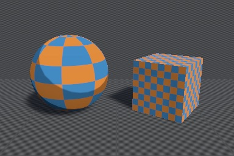
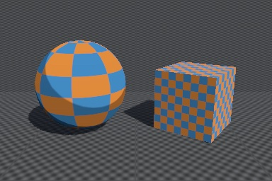
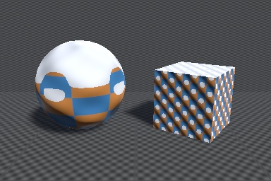
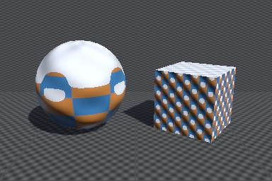
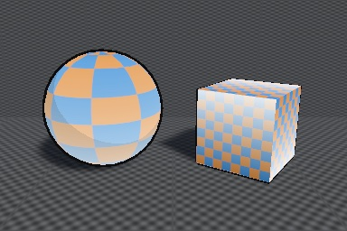
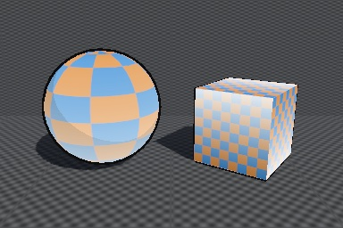
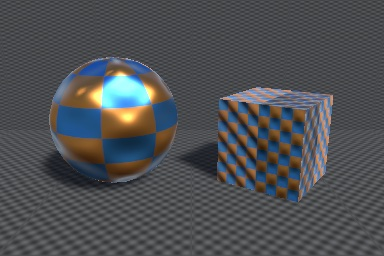
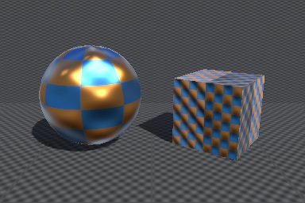
How it works
1. Scan
Finds every Built-in dependency (surface shaders, ForwardBase/ForwardAdd, GrabPass, OnRenderImage, command buffers, Projectors,
Post Processing v2, Shader.Find, URP settings) and says what breaks and what to do. Export HTML, Markdown or CSV.
2. Preview
See the exact line changes before anything is written, with notes on anything that will render differently.
3. Convert
Writes URP versions of the checked files, turns on the URP settings they need, and compiles every converted shader for each graphics API.
4. Revert
Originals are backed up outside Assets. One click restores them, with a warning if you edited a file since.
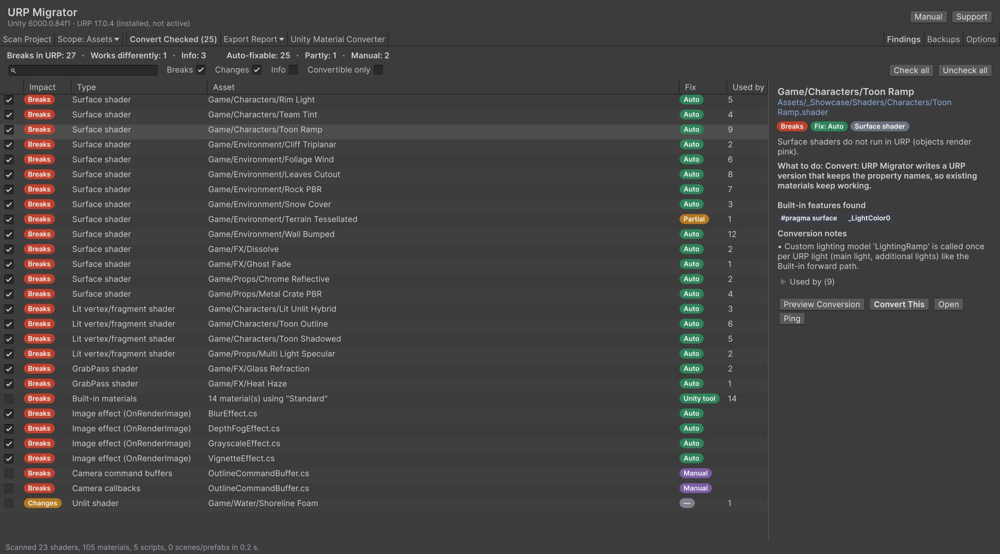
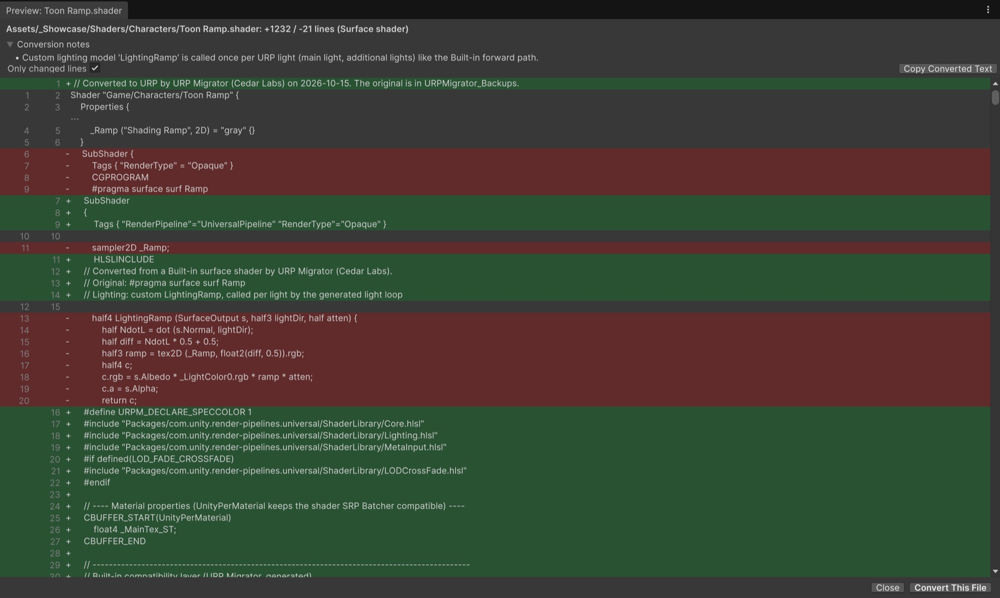
Image effects keep working
Each OnRenderImage script gets a URP version of the method, and one renderer feature runs them all. Blit chains, temporaries,
[ImageEffectOpaque] and depth requests are supported. The script still works in the Built-in pipeline.
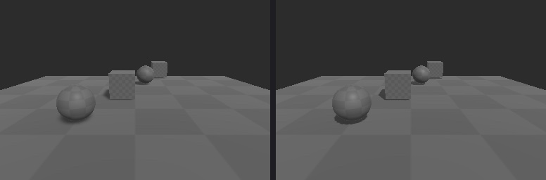
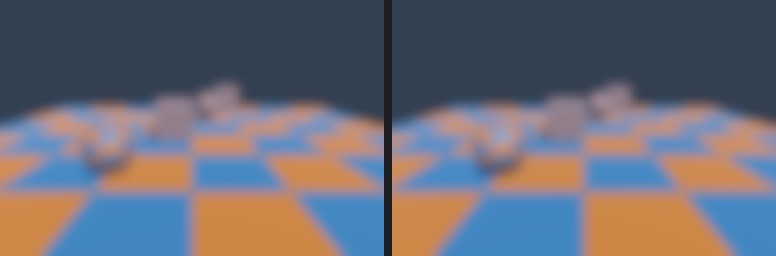
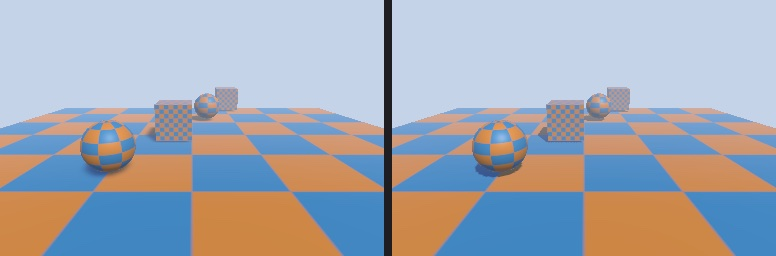
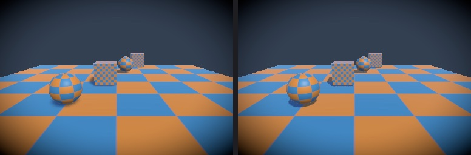
What it handles
Surface shaders
Standard, StandardSpecular, Lambert, BlinnPhong and custom lighting functions (called per light);
vertex:, finalcolor:, alpha:fade/premul, alphatest, decal, addshadow;
Input members such as uv_, uv2_, worldPos, worldNormal, viewDir,
worldRefl, screenPos, COLOR, VFACE and INTERNAL_DATA.
Vertex/fragment shaders
UnityCG, Lighting, AutoLight and PBS functions and macros; ForwardBase to URP;
ForwardAdd merged into the light loop; Built-in shadow macros; GrabPass to the Opaque Texture; shadow and depth passes from
Fallback/UsePass.
Image effects
OnRenderImage to a URP version of the method; Graphics.Blit chains,
temporaries and global shader values; [ImageEffectOpaque]; Scene view; depth texture requests.
Every converted shader
URP Forward, Forward+ and Deferred; shadows, additional lights, light layers, SSAO, decals, lightmaps, fog and instancing; SRP Batcher compatible; no dependency on URP Migrator.
Reports
HTML, Markdown and CSV. Also lists Projectors, command buffers, OnPreRender/OnPostRender,
replacement shaders, Post Processing v2, Halo and Lens Flare, and Shader.Find, each with what to do.
Workflow
Preview, automatic backups, one-click revert, a compile check per graphics API, a command line for CI, and optional dual-pipeline shaders.
OnPreRender/OnPostRender, Projectors (URP uses Decal Projectors) and Post
Processing v2 profiles (Unity's Render Pipeline Converter handles these). Point and spot lights use URP's light falloff, as every URP shader does.Requirements
- Unity 6 (6000.0 or later); tested on 6000.0.84f1.
- Universal RP 17.0 or later for converting. Scanning works without URP.
- Editor tool. The only runtime code is a small assembly that runs converted image effects.
Questions
Will my materials break?
No. A converted shader keeps its file, name and property names, so materials, prefabs and scripts keep working.
Do I still need Unity's Render Pipeline Converter?
Yes, for Unity's own materials (Standard, Legacy, Mobile, Particles). URP Migrator handles the custom shaders and effects that Unity's converter skips, and opens Unity's converter for the rest.
Can one shader support both pipelines?
Yes. With “Keep the Built-in SubShader” on, the converted shader keeps the original SubShader too and works in both.
Does it need to stay installed?
Converted shaders are self-contained. Converted image effects need the small runtime folder.
What does it not convert?
Tessellation (the shader converts without it, with a warning), camera command buffers and OnPreRender/OnPostRender, Projectors and Post Processing v2 profiles. These are reported with what to do.
Free guides
Converting by hand? These cover the same ground with tested code: